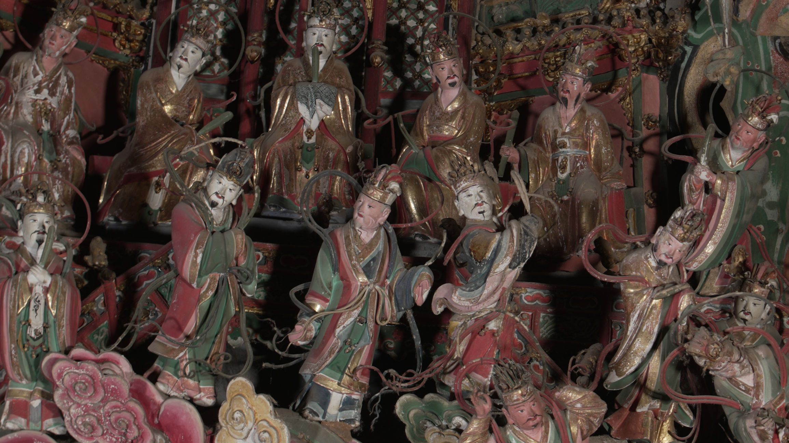
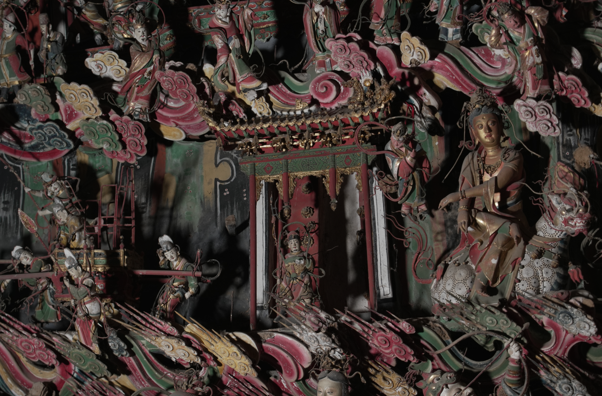

[ 形态 → 意义 ]
01 / 三教融合
项目报告从儒、释、道融合的角度理解造像整体，配对图像分别标注为儒教与道教部分。
02 / 单体细节
另一条线索聚焦单体彩塑。近景将注意力从整体转向面部表情、衣纹与装饰细节。
03 / 动态影像
光与光珠将扫描形态延伸为动态的视觉阐释。

[ 甲 ] 儒教部分 — 报告标注

[ 乙 ] 道教部分 — 报告标注

[ 丙 ] 光珠视觉研究
资料来源 / 项目报告 · 模型处理与动态影像
观音堂 [ 05 / 05 ]